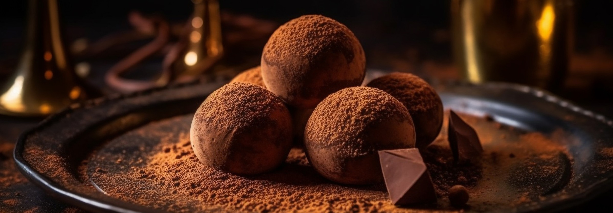
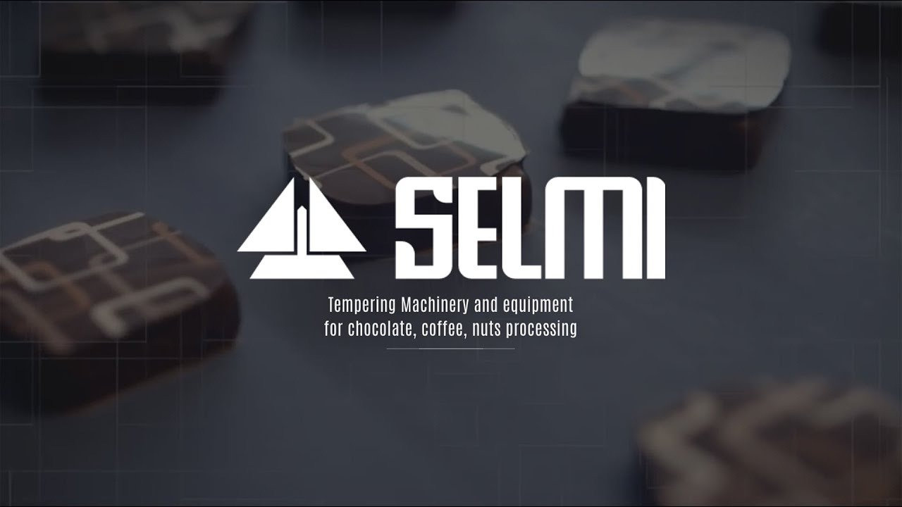
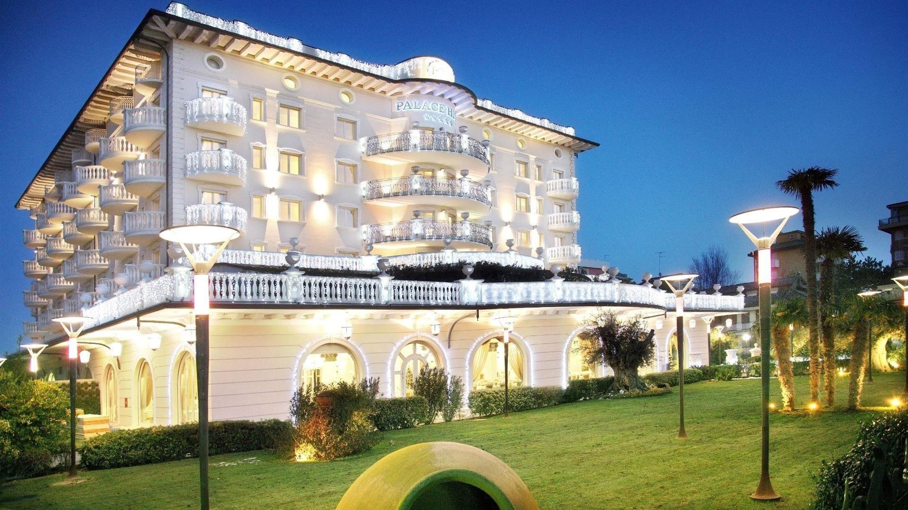
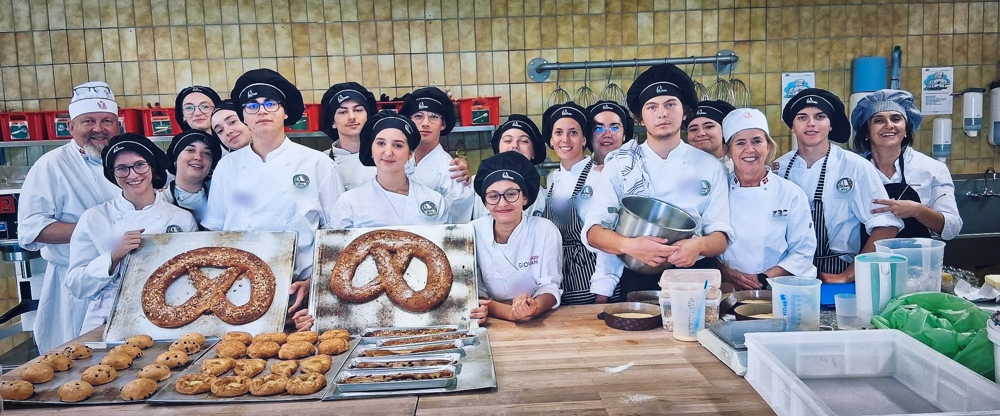
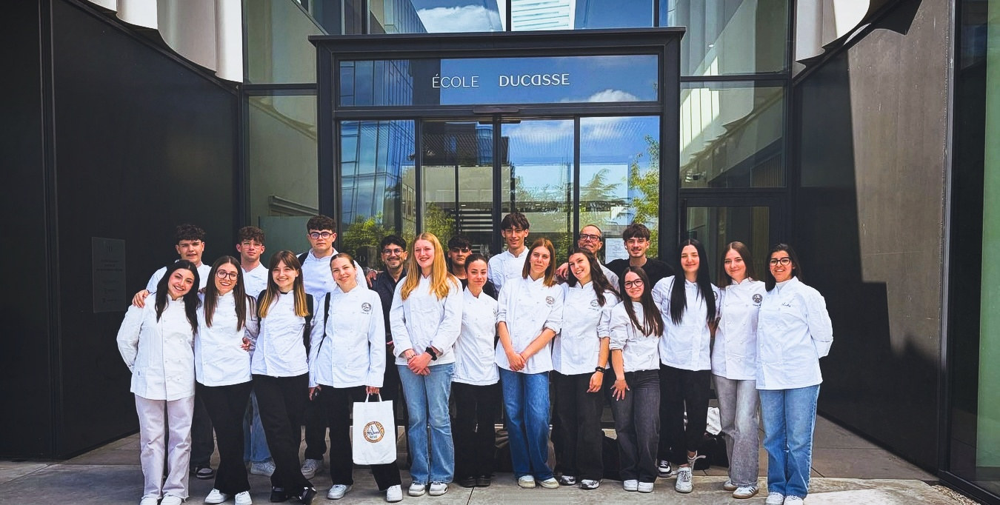
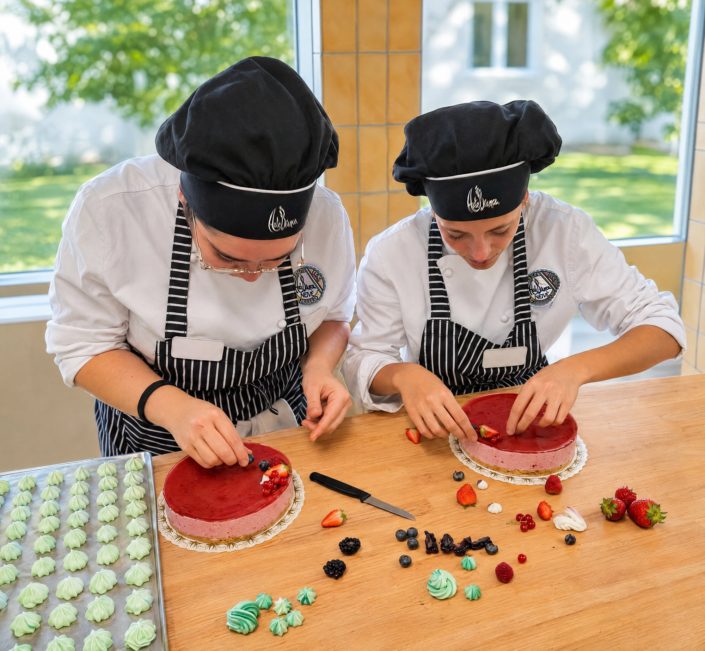
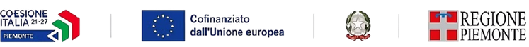

I nostri fiori all’occhiello
Stage

Oltre 300 convenzioni attivate

Gli stage si svolgono in laboratori artigianali di pasticceria e panetteria, caffetterie, ristoranti, resort, alberghi e aziende dolciarie.
Ad oggi collaboriamo con oltre 300 realtà in provincia di Cuneo, Asti, Torino, in Liguria, Valle d’Aosta e Milano.
I periodi di stage sono differenziati in base alla classe frequentata, così da garantire un’esperienza formativa progressiva e sempre più strutturata.
- Seconde
stage estivo facoltativo
- Terze
3 settimane prima di Pasqua (con sospensione lezioni) + periodo estivo
- Quarte
periodo estivo



Mobilità all’estero
I.I.S.S. Piera Cillario Ferrero
La nostra scuola è accreditata Erasmus+, da sola e insieme ad APRO Formazione, e ogni anno manda studenti, docenti e personale in Europa per tirocini, corsi e scambi.
Per gli studenti delle classi quarte
nel corso dell’a.s. ci saranno le selezioni per:
- tirocini all’estero della durata di un mese a giugno 2027, finanziati dal progetto Erasmus+ della nostra scuola
- 5 tirocini all’estero della durata di un mese a Valencia (Spagna), finanziati da Erasmus+ in collaborazione con APRO Formazione (partenza a settembre 2027)
Per gli studenti delle classi quinte
dopo il diploma, ci sarà la possibilità di partecipare alle selezioni per:
- tirocini di 3 mesi fra luglio e dicembre 2027, finanziati dal progetto Erasmus+ della nostra scuola
- tirocini di 3 o 6 mesi (partenze da settembre 2027), finanziati da un progetto Erasmus+ di APRO Formazione (bandi ad aprile 2027; la selezione è aperta a tutte le scuole del territorio)
È a carico delle famiglie unicamente il tragitto tra casa e aeroporto di partenza in Italia.


Ci sono poi gli scambi e le altre esperienze
– con la Francia, nell’ambito del progetto Trans’Alp promosso dall’USR Piemonte (bandi di candidatura proposti alle classi seconde e terze che studiano francese): un mese in Francia, ospiti di una famiglia, e poi un mese a casa propria con lo studente francese. Dal 19 ottobre al 13 novembre 2026, per esempio, una studentessa francese del progetto è stata ospite a Neive. Le spese per le famiglie sono contenute, perché l’ospitalità è reciproca: restano a carico il viaggio e alcune visite
– una mobilità di un mese per 1 o 2 studenti con il progetto Erasmus+ della nostra scuola
Viene inoltre proposto agli studenti delle classi terze la possibilità di trascorrere 6 mesi/un anno all'estero con Intercultura (normalmente durante il quarto anno). In questo caso le spese sono interamente a carico delle famiglie, ma è possibile candidarsi ad alcune borse di studio.
Per informazioni sui progetti all’estero si può scrivere a progettiestero@cillarioferrero.it
Fra queste, le partenze degli studenti dell’Arte Bianca



Qui sotto sono riepilogate le 132 mobilità degli studenti di tutta la scuola nell’a.s. 2025/26
| Destinazione | N. studenti | Progetto |
|---|---|---|
| Irlanda | 11 | Tirocinio di un mese (settembre 2025), progetto Erasmus+ «ImaginEU» della nostra scuola |
| Austria | 4 | Tirocinio di un mese (settembre 2025), progetto Erasmus+ «ImaginEU» della nostra scuola |
| Roskilde (Danimarca) | 15 | Corso di pasticceria di due settimane (settembre 2025), progetto PNRR Erasmus+ |
| Spagna | 6 | Tirocinio di un mese (settembre 2025), Erasmus+ in collaborazione con APRO Formazione |
| Francia | 6 | Un mese (settembre 2025), progetto Trans’Alp |
| Spagna | 4 | Tirocinio di 3 mesi dopo il diploma (settembre 2025), progetto Erasmus+ «ImaginEU» della nostra scuola |
| Valencia (Spagna), Parigi (Francia) e St. Julian’s (Malta) | 75 | Due settimane (febbraio e maggio 2026), progetto PNRR STEM e Multilinguismo |
| Danimarca | 6 | Due settimane (aprile-maggio 2026), progetto Erasmus+ della nostra scuola |
| Vienna (Austria) | 5 | Studenti dei corsi serali, Erasmus+ per l’istruzione degli adulti |
Apprendistato duale
I.I.S.S. Piera Cillario Ferrero

L’Istituto Cillario Ferrero di Alba rientra nel catalogo dell’Offerta formativa della Regione Piemonte per l’apprendistato duale di primo livello per il conseguimento del Diploma di istruzione secondaria di secondo grado.
Il contratto di apprendistato di primo livello - come disciplinato dall’articolo 43 del decreto legislativo n. 81/2015 e dal D.M. 12 ottobre 2015 - è rivolto ai soggetti che hanno compiuto i 15 anni di età, sino al compimento dei 25 anni, iscritti all’interno di un percorso scolastico.
La finalità del contratto è il conseguimento di un titolo di studio della formazione secondaria di secondo grado, tramite un percorso “duale” che si realizza in parte presso l’istituzione scolastica che eroga la “formazione esterna” e in parte presso un’impresa che eroga la “formazione interna”.
L’obiettivo di questo approccio è quello di ridurre il disallineamento tra le competenze richieste dal mercato del lavoro e quelle in uscita dal percorso scolastico, per fornire una risposta efficace alla difficoltà delle imprese di reperire nel mercato del lavoro profili professionali specializzati, aumentando i livelli di occupazione giovanile.
Indicazioni di dettaglio possono essere reperite consultando il sito della Regione Piemonte al seguente link.
Negli anni l’istituto ha proposto e portato a compimento vari percorsi riguardanti gli indirizzi di studio, coinvolgendo le tre sedi di Alba, Neive e Cortemilia.
I percorsi relativi all'Arte Bianca, completati o ancora in fase di attuazione, sono sintetizzati nella seguente tabella:
| Anno scolastico | Tipo percorso | N° allievi | Azienda |
|---|---|---|---|
| 2023 - 25 | Biennale | 1 | Pasticceria “La Preferita” - Asti |
| 2023 - 25 | Biennale | 1 | Pasticceria “I dolci dell’isola” - Isolabella |
| 2023 - 25 | Biennale | 1 | Ristorante “all’enoteca” - Canale |
| 2023 - 25 | Biennale | 2 | Panetteria FuocoFarina - Alba |
| 2023 - 25 | Biennale | 1 | Panetteria “D&D” - Narzole |
| 2024 - 25 | Annuale | 1 | Pasticceria “Mighetto” - Asti |
| 2024 - 25 | Annuale | 3 | FERRERO INDUSTRIALE ITALIA S.R.L. (reparto UPS) |
| 2024 - 26 | Biennale | 1 | Pasticceria “Sorelle Balbo” - Canelli |
| 2024 - 26 | Biennale | 1 | Caffè Posta - Bra |
| 2024 - 26 | Biennale | 1 | Panetteria Giacosa - Alba |
| 2024 - 26 | Biennale | 1 | Panetteria Montaldo Alba |
| 2024 - 26 | Biennale | 1 | Ristorante L’Antinè - Barbaresco |
| 2024 - 26 | Biennale | 1 | Bar ristorante Naevia - Neive |
| 2024 - 26 | Biennale | 2 | Pasticceria Fratelli Boero - Monforte |
| 2025 - 26 | Annuale | 1 | Ristorante “FRE” - Monforte d’Alba |
| 2025 - 26 | Annuale | 1 | Pasticceria “GIAMP” - Bra |
| 2025 - 26 | Annuale | 1 | Pasticceria “Ghitin” - Montà |
| 2025 - 27 | Biennale | 1 | “Golosi di salute” (TCN Group) - Alba |
| 2026 - 27 | In corso | 1 | Pasticceria “Giampaolo” - Alba |
| 2026 - 27 | In corso | 1 | Pasticceria “La Preferita” - Asti |